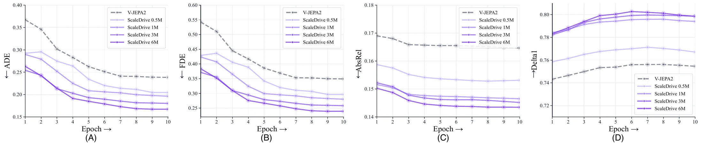
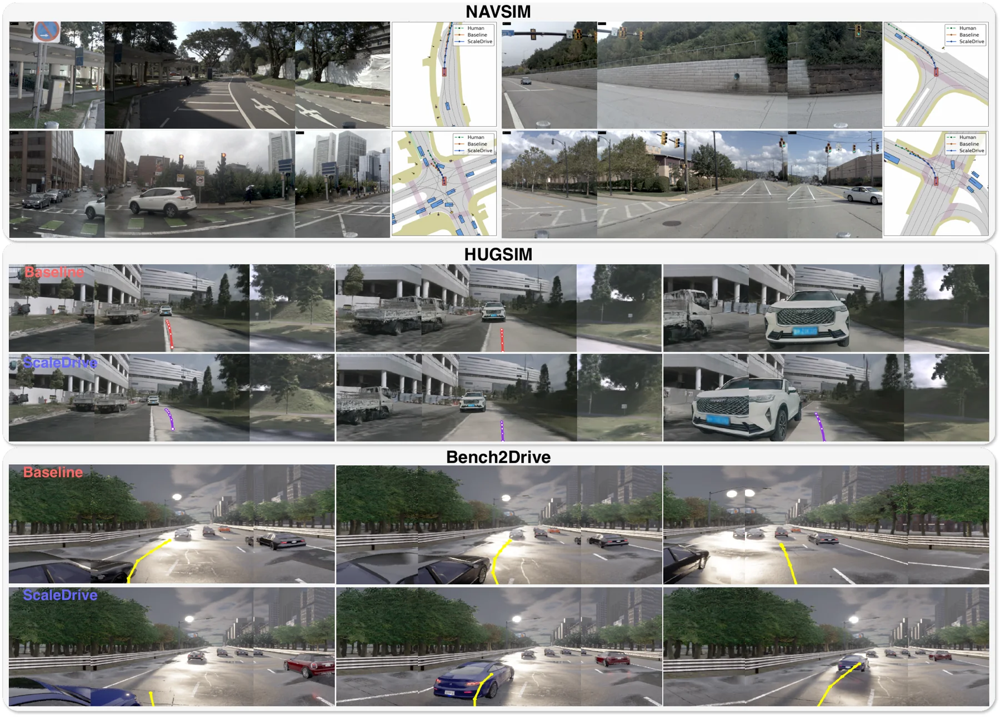

Action-free pretraining
Learn from internet open-world driving videos with no trajectory, action, or perception annotations.
Scaling Action-Free Video Latent Prediction for Transferable Representations in End-to-End Autonomous Driving
ScaleDrive turns large-scale, unlabeled driving videos into a frozen visual representation that transfers across planners and driving benchmarks.
Anonymous authors · Paper under double-blind review
Most driving representations are shaped by task labels or actions. ScaleDrive studies whether predicting hidden video content in latent space can learn spatial and temporal cues that transfer to planning—without action annotations or benchmark-specific pretraining data.
Learn from internet open-world driving videos with no trajectory, action, or perception annotations.
Combine patch masking with complete temporal-slice masking to encourage scene structure and dynamics modeling.
Keep the video encoder frozen when training downstream planners, exposing the value of the learned representation.
A joint-embedding predictive architecture learns from visible video tokens and predicts masked spatiotemporal regions. The learned encoder is then reused across downstream driving policies.

Sample 4-second driving clips at 2 Hz from OpenDV-YouTube.
Infer masked patches and complete temporal slices in feature space.
Discard the predictor, freeze the encoder, and train the planner.
With architecture and training budget held fixed, increasing the pretraining pool from 0.5M to 6M clips improves NAVSIMv1 PDMS from 92.77 to 93.61. Temporal-slice masking raises the final result to 93.79.

ScaleDrive’s representation supports strong end-to-end planning while the pretrained video encoder remains frozen.
PDMS on NAVSIMv1. Each ScaleDrive variant is compared with its own planner baseline.
| Planner | Trajectory model | Baseline PDMS | With ScaleDrive | Gain |
|---|---|---|---|---|
| LTF | Regression | 83.8 | 86.2 | +2.4 |
| DiffusionDrive | Diffusion | 86.6 | 88.1 | +1.5 |
| DrivoR | Regression | 93.1 | 93.4 | +0.3 |
| ChainFlow | Autoregressive | 92.6 | 93.2 | +0.6 |
Additional evaluation in the paper covers NAVSIMv2, HUGSIM, and Bench2Drive under their respective protocols.
Frozen-encoder probes test what the representation contains. Ego-motion and monocular depth performance improve as action-free video pretraining scales.

Selected planning examples from NAVSIM, HUGSIM, and Bench2Drive illustrate the paper’s comparisons across driving scenarios.

Paired clips from the research artifacts show ScaleDrive and the V-JEPA2 baseline in the same closed-loop scenes. Play each pair to inspect the behavior directly.
ScaleDrive shows that action-free latent prediction can strengthen frozen visual representations for end-to-end autonomous driving across policy architectures and evaluation environments.